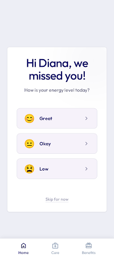

Rescuing Member Habits Before Churn Settles
An early-intervention lifecycle engine that detects engagement declines between Day 14 and 21, achieving a 45%–60% habit recovery rate compared to standard reactive day-30 campaigns.
Behavioral Decay: The Optimal Intervention Window
Compare the standard reactive approach with our predictive velocity model.
Reactive Dormancy
Waiting for 30 days of complete silence to classify a user as churned is reactive. By this point, the health habit loop is broken, notification permissions are often revoked, and recovery cost is high.
- Member Mindset: Disengaged & Checked out
- Re-engagement Cost: High (generic value sells)
- Recovery Rate: 15% – 25% recovery
Behavioral Decay Sweet Spot
Intervening at Day 14-21 catches the member as login frequency and session lengths slip, rescuing their momentum before they break their daily care habit loop.
- Member Mindset: Slipping (plateau/friction)
- Re-engagement Cost: Low (targeted clinical nudges)
- Recovery Rate: 45% – 60% recovery
The Multi-Channel Habit Rescue Journey
Our continuous churn prediction model triggers sequential, clinical touches at key drop points.
Day 14: The Low-Friction Re-entry
Channel: Push Notification (SMS Secondary)
A 10-second "Micro-Win" checking in on the user's energy level without requiring a complex clinic log.
Day 17: Evidencing Value Recall
Channel: Personalized Clinical Email
Visualizing progress and a customized note from a Care Coach to trigger the "sunk cost" loop.
Day 21: Human-Augmented Pivot
Channel: Care Guide Personal SMS / Outbound Call
Direct outreach by care guides to identify systemic barriers (e.g. prescription friction or clinical side effects).
Interactive UI Showcase
Select a stage in the lifecycle re-engagement journey to inspect the verified visual asset.

Diana, you've active zones on lock!
Your Clinical Coach has verified your active zones tracking looks amazing. Keep it up today!
Patient ID: #9833D
Risk Score: 0.84 (High Churn)
Lapsing Risk
12.4%
Rescued Loops
+4.8%